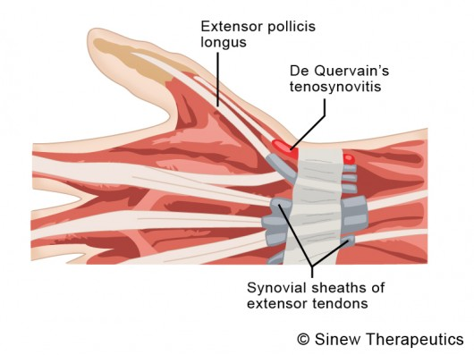

Enfermedad causada a partir de la iflamación de los tendones extensores del dedo pulgar. Es comunmente ocacionada por movimintos repetitivos de la muñeca, ya sea al practicar un deporte, o al exigir de manera constante al tendón. Cuando el tendón involucrado se inflama, el paciente presenta hinchazón en la muñeca, ademas de dolor cuando se intenta mevor la mano, abrir y cerrar el puño y al manipular los dedos pulgar e índice.
El tratamiento conciste en varias etapas que varían según el paciente y la gravedad de la inflamación. En vista general, la primera etapa busca disminuir el dolor, usando eatimulación eléctrica, aplicando paquetes fríos/calientes, entre otras técnicas para desinflamar. posteriormente se procede al reposo de la mano/muñeca a travez de una férula o yeso. Por último, la mejora progresiva de la flexibilidad, fuerza, resistencia y ajuste de los límites normales de movimiento a partir de ejercicios y rutinas establecidas por un especialsta.
Tambien se han enfocado dispositivos de rehabilitación de la mano con el objetivo de reducir el costo de rehabilitación y periodo de terapia. Estos dispositivos formarían parte del día a día del paciente ayudándolos a realizar sus actividades permitidas sin complicación para no tener que recurrir al fisioterapeuta en cada momento.
A pesar de contar con esta tecnología la fabricación de estos dispositivos requiere de costo elevado de inversión, haciendolos poco accesibles para la mayoría de pacientes. Ademas, una desventaja que presentan es el tener que adaptar a diferentes tamaños y formas de mano. Aún cuando se logra adaptar con mucha exactitud la morfología compleja de la mano, los prototipos son conciderablemente pesados, por lo que no serían un elemento viable para el tratamiento doméstico.
Falta de un sistema mecánico eficiente, portátil y de bajo costo que asista a aquellos con tendinitis de Quervain para proporcionar un método seguro y sencillo de rehabilitación, y al mismo tiempo, de asistir para obtener un movimiento natural del dedo.
Lopez Mendoza J.. (2011). The impact of anatomical variability of the first extensor anatomic compartment of the hand in the Quervain's disease. Cirugìa plástica iberoamericana, 37- Nº 3, 289-293.
Castro Malca, Yosselin Milagros.(2016).. Riesgo de tendinitis de Quervain en personal contable de la empresa Smart House Perú. Universidad Alas Peruanas.
Guerrero H., Lucy Mónica U., Leonor Lenia I., Alicia P.(2017).Asociación entre los trastornos músculo-esqueléticos, Tendinitis de De Quervain y la tenencia del smartphone en pobladores de la comunidad cristiana Agua Viva del distrito de los Olivos.FACULTAD DE CIENCIAS DE LA SALUD(UCSS)
Oscar S., Juan J., Ignacio H. (2016) Design and Development of a Hand Exoskeleton Robot for Active and Passive Rehabilitation. International Journal of Advanced Robotic Systems.
E. A. Ceballos , M. Díaz-Rodríguez , J. L. Paredes, P. C. Vargas(2016). Development of a passive Rehabilitation Robot for the wrist joint through the implementation of an Arduino UNO microcontroller. UIS Ingenierías.